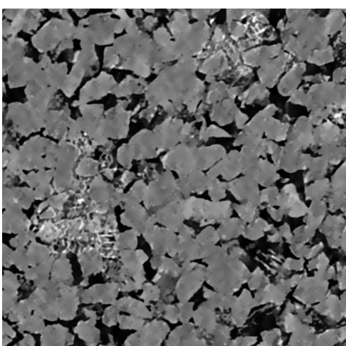
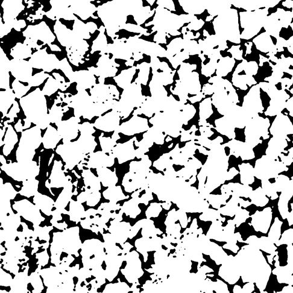
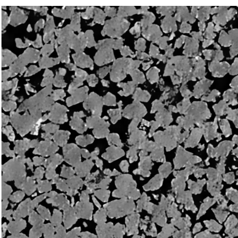
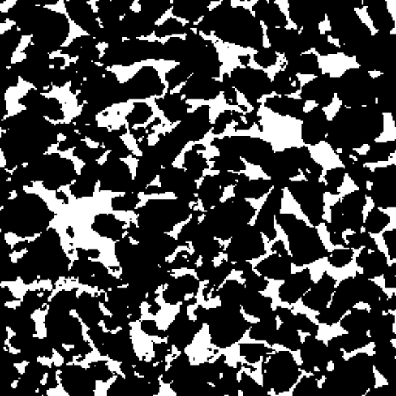
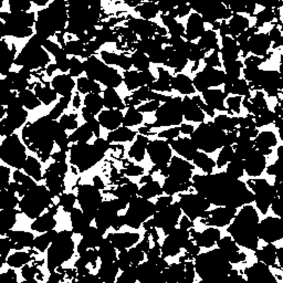
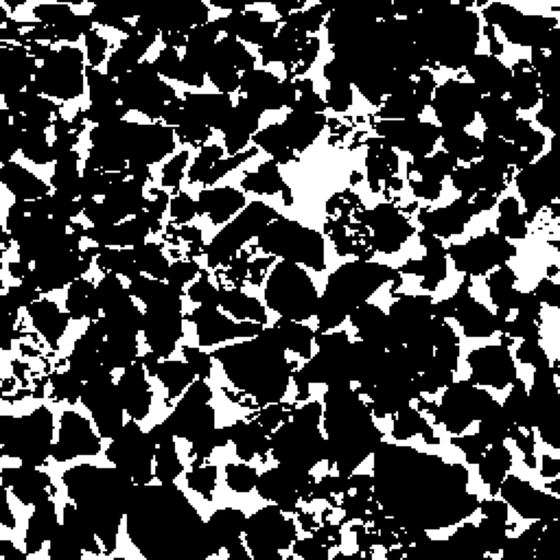
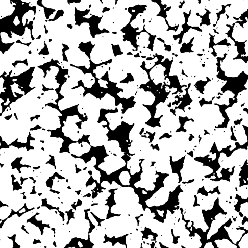

데이터 탐색 &
문제 정의
Load & Explore — Micro-CT 부피, 공극률, sparse, 선형 보간 베이스라인



오늘은 6주 여정의 첫걸음
non-DL 베이스라인으로 문제를 충분히 이해한 뒤, 딥러닝으로 넘어갑니다.
모두 측정해야 할까?
고해상도 + 좁은 슬라이스 간격을 동시에 만족하려면 촬영 시간이 급격히 늘어납니다. 오늘은 일부만 측정하고 나머지를 복원하는 아이디어를 직접 확인합니다.
W1이 끝나면 할 수 있는 것
데이터 이해하기
Voxel · Slice · Porosity — 우리가 다루는 3D 암석 데이터의 기본기.
Voxel — 3D의 픽셀
volume[z, y, x] 의 한 칸 = 작은 정육면체 하나

한 부피, 세 방향의 슬라이스
같은 256³ 부피를 z·y·x 세 평면으로 잘라 봅니다. 가장자리와 중앙, 축에 따라 다르게 보입니다.



공극률 — 빈 공간의 비율
phi = binary_volume.mean() # 0 ~ 1

세 개의 사암 도메인
같은 코드, 다른 암석. 공극률과 구조가 다르면 sparse 보간 난이도도 달라집니다.
슬랩별 공극률 & 등방성
Sparse Imaging
전부 측정하지 않는다 — 일부만 측정하고 나머지를 복원하는 전략.
촬영 시간이라는 벽
Micro-CT는 높은 해상도와 좁은 슬라이스 간격을 함께 요구할수록 촬영이 느려집니다.
k=5 → 80% 시간 절감
측정된 슬라이스 vs 누락된 슬라이스
간격 k로 known / missing 인덱스를 나눕니다. 아래는 k=3일 때의 측정 패턴.
k를 키우면 — 빨라지지만 어려워진다
선형 보간
— 첫 베이스라인
누락된 슬라이스를 가장 단순한 방법으로 복원하고, 그 한계를 측정합니다. (연구의 B1)
두 측정 사이를 α로 섞는다
(1−α)·slice_before
+ α·slice_after
α=0
α=1
부피 전체를 복원하는 3단계
k가 커지면 |Δφ|는 언제 무너지나
측정량을 줄일수록(k↑) 공극률 오차 |Δφ|가 커집니다. 오차가 급격히 꺾이는 지점이 선형 보간의 실용 한계입니다.
선형 보간은 모양을 모른다
두 슬라이스를 단순히 섞을 뿐, pore가 어떻게 연결되는지는 모릅니다. k가 커질수록 구조가 뭉개지죠. 그래서 pore 기하를 학습하는 딥러닝이 필요합니다.
오늘의 과제 & 다음 주
평가지표를 |Δφ| + |ΔSA| + SSIM으로 확장하고 B1·B2·B3 베이스라인을 정식 구현합니다.
질문 & 다음 시간에.
오늘 만든 |Δφ| 곡선이, 앞으로 6주간 딥러닝으로 무엇을 이겨야 하는지 보여줍니다.